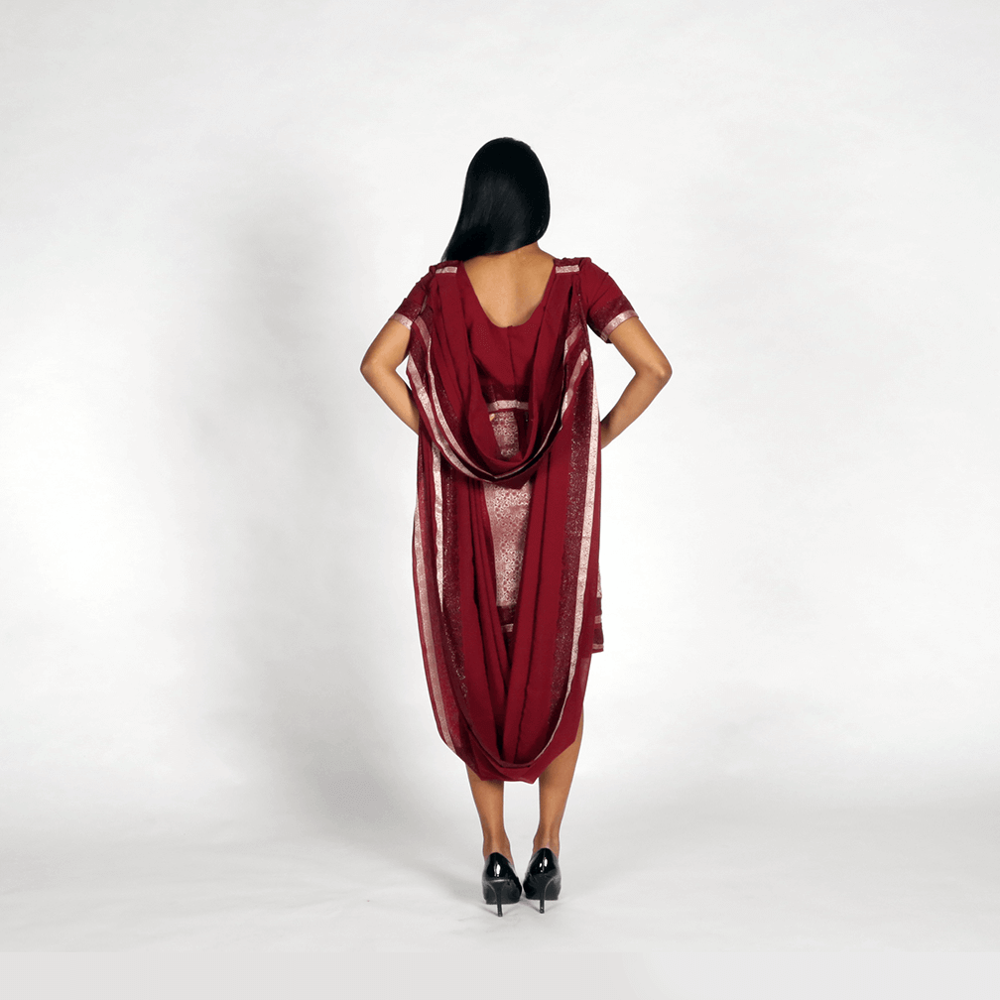

The goal of this assignment was to create a transcultural suit, something wearable that embodies two cultures and identifies an issue for further exploration. I chose to explore my dual identity as an Indo-American and its relationship to gender - this costume allowed me to, at the very least, topically communicate my views on both of these qualities of my identity.
This costume explores the role of a woman in Indian and Western cultures. While the material and general style of the draping mimics the sari, a traditional garment worn by Indian women, the pencil skirt and fitted forms mimic the Western woman. Saris are restrictive, heavy, delicate, and limiting in mobility. Pencil skirts often evoke the image of powerful women, but pencil skirts and heels are also extremely restrictive to movement. Both of these garments are hallmarks of women in different cultural contexts, and are celebrated as a woman’s uniform but both pose not only metaphorical but also physical constraints on mobility. I wanted to preserve the heavy draping of the sari and compound it over the fitted form of a pencil skirt. To contrast the the constraints built into the outfit, I fashioned the draping into a cape to symbolize progress (ascension to the glass ceiling?).
I tried to use as much of the original fabric as I could to preserve the weight of the original sari. In its construction, I layered the silk to create the skirt and its trim. The leftover fabric was pleated, as saris traditionally are, ironed and sewn in, and draped carefully in a detachable cape.
Presenting my project at a critique at the end of the semester,
Sewn from the fabric of a sari with clasps,
zipper,
2016